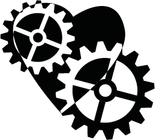

- Overview
- 2013

Life (2013)
Date: 6th of June, 2013
This symposium took place on the 6th of June in the centre of Nijmegen. The theme of ACAIS 2013 was “Life” and focussed on two main questions:
- How does AI influence our lives?
- How does our life(and nature) influence AI?
Topics:
Organised by:
- Wouter Bulten (Chairman)
- Frank Dorssers(Secretary)
- Marije de Witte (Treasurer)
- Jelte van Waterschoot
- Robert-Jan Drenth
- Robbert Hendriks
- Margo van der Stam
- Denise Slotman